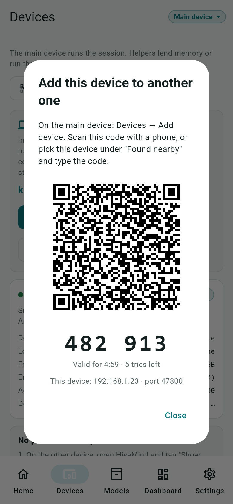
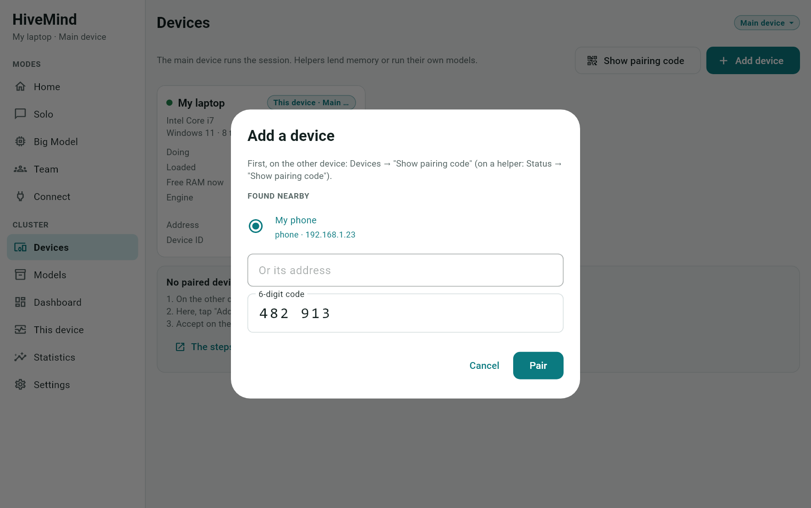
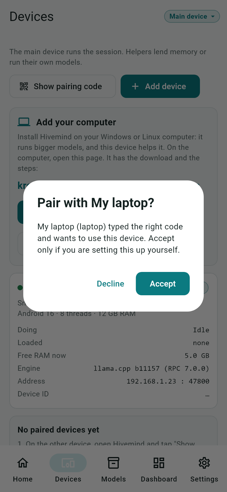
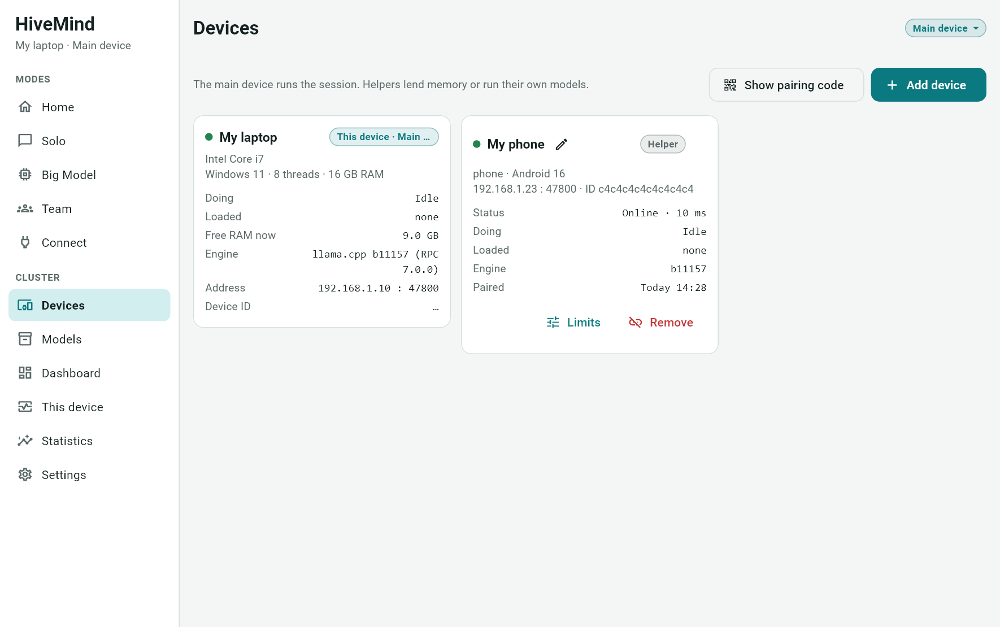

How to install Hivemind on your computer
About 10 minutes. You need the computer, your phone with Hivemind, and one Wi‑Fi network for both.
Install on Windows Windows 10 or 11, 64-bit
-
Download
If the browser says the file "isn't commonly downloaded": open the downloads list, click … next to the file → Keep (Edge also asks Keep anyway).
-
Unblock the zip (recommended)
Open your Downloads folder. Right-click
HiveMind-windows-x64.zip→ Properties. At the bottom, tick Unblock → OK.This spares you a blue warning when Hivemind starts. No "Unblock" box? Then skip this step.
-
Unzip it
Right-click the zip → Extract All… → pick a place you'll find again, for example Documents → Extract.
Don't start Hivemind from inside the zip: it needs the files next to it.
-
Start Hivemind
Open the HiveMind folder and double-click
hivemind.exe."Windows protected your PC"?Click More info → Run anyway. Windows shows this for new programs that aren't signed yet. It appears once."Smart App Control blocked an app"?See Smart App Control below. -
Allow it on your home network
Windows asks once: tick Private networks → Allow access. This lets your phone find the computer. Leave "Public networks" unticked.
The question may only come the first time Hivemind looks for devices (step 2 below).
-
Easier next time (optional)
Right-click
hivemind.exe→ Pin to Start (Windows 11: Show more options first), or Send to → Desktop (create shortcut). In Hivemind, Settings → Start with Windows keeps it ready in the tray, next to the clock.
Next: pair it with your phone.
Install on Linux 64-bit, Ubuntu 22.04 or newer, Debian 12, Fedora, Mint 21 or newer
-
Download
-
Unpack it
In your file manager: right-click the file → Extract Here, and move the HiveMind folder to your home folder. Or in a terminal:
tar -xzf ~/Downloads/HiveMind-linux-x64.tar.gz -C ~ -
Add it to the app menu
In a terminal:
~/HiveMind/install.shIt only adds a menu entry with the icon, for your user; no password needed. Moved the folder later? Run it again.
-
Start Hivemind
Search for Hivemind in your app menu. Or in a terminal:
~/HiveMind/hivemind -
Let devices find each other
"Found nearby" uses
avahi-daemon, which desktop Ubuntu, Fedora and Mint already run. If you turned on a firewall (ufw), allow Hivemind's port and device discovery:sudo ufw allow 47800:47801/tcp sudo ufw allow 5353/udp
Next: pair it with your phone.
Pair with your phone
Put the phone and the computer on the same Wi‑Fi and open Hivemind on both. The computer becomes the main device (it runs the models); the phone becomes its helper.
-
PhoneShow the pairing code
Open Devices → Show pairing code. Keep this screen open: the code is valid for 5 minutes.

-
ComputerAdd the phone
Open Devices → Add device. Pick your phone under Found nearby, type the 6-digit code from the phone → Pair.

Your phone isn't in the list?Type its address in Or its address: the phone shows it under the code (for example192.168.1.23). Still nothing? See The phone and computer don't find each other. -
PhoneAccept
The phone asks whether to pair with your computer → Accept.

-
ComputerDone
Your phone is on the computer's Devices screen as a Helper, with a green dot while it's connected. From now on they find each other by themselves, even when their addresses change.

Want to use the phone on its own again? On the phone, tap the sign at the top right → Main device. More phones? Repeat steps 1–3 for each.


Your first chat on the computer
Get a model
Models → Catalog: pick one marked Fits this device → Download. Qwen3 4B Instruct is a good start on most laptops (about 2.5 GB).
Chat
Solo → pick the model at the top → Load → type a question and press Enter.
Use your phone's memory
For a model too big for the computer alone: Big Model. For long documents: Team. The user guide explains both.
Something didn't work
The phone and computer don't find each other
- Both on the same Wi‑Fi, not a guest network, and Hivemind open on both.
- Windows: your Wi‑Fi must be a private network: Settings → Network & internet → Wi‑Fi → your network → Private network.
- Windows: if you clicked "Cancel" when Windows asked about the network: Windows Security → Firewall & network protection → Allow an app through firewall → Change settings → tick Private next to every hivemind entry → OK.
- Linux: the
ufwlines in step 5. - Instead of "Found nearby", type the phone's address (shown under its pairing code).
- Some routers keep devices apart ("AP isolation" or "client isolation"); turn that off in the router, or use another network.
"The code expired" or "wrong code"
A code works for 5 minutes and 5 tries. On the phone tap Show a new code and type the new one.
Windows 11: "Smart App Control blocked an app that may be unsafe"
Smart App Control blocks every program that isn't signed, and has no "run anyway" for a single program. Hivemind isn't signed yet. You can:
- wait for the signed version of Hivemind (Microsoft Store), or
- turn Smart App Control off: Windows Security → App & browser control → Smart App Control settings → Off. On some versions of Windows it can't be turned back on without reinstalling Windows, so decide carefully.
Windows: nothing happens, or a message about a missing DLL
Make sure you unzipped the whole zip (step 3) and start hivemind.exe from the unzipped HiveMind folder. If your antivirus moved a file to quarantine (for example llama-server.exe, the AI engine), restore it and allow it.
Linux: Hivemind doesn't start
Start it in a terminal to see why: ~/HiveMind/hivemind
libgtk-3.so.0missing:sudo apt install libgtk-3-0(Fedora:sudo dnf install gtk3).libgomp.so.1missing (the model doesn't load):sudo apt install libgomp1(Fedora:sudo dnf install libgomp).GLIBC_2.34 not found: your Linux is too old (for example Ubuntu 20.04). Ubuntu 22.04 or newer is needed.
The phone stops helping after a while
Many phones stop apps in the background. On the phone, Hivemind shows Keep helping in the background with the steps for your phone's brand; do them once. See Keep phones helping.
Update or remove
- Update: download the new version, quit Hivemind (Windows: the tray icon next to the clock → Quit; Linux: close its window), and put the new HiveMind folder in place of the old one. Your models, chats and paired devices stay: they're kept in your user folder, not in the HiveMind folder. Update the phone too: all devices should run the same version.
- Remove on Windows: in Hivemind turn off Start with Windows, quit it, and delete the HiveMind folder. To delete your models and chats too, delete
%APPDATA%\dev.hivemind. - Remove on Linux:
~/HiveMind/install.sh --remove, then delete the HiveMind folder. Models and chats:~/.local/share/dev.hivemind.hivemind.